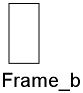
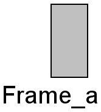
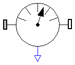

| Name | Description |
|---|---|
| Frame | Frame of a mechanical system |
| Frame_a | Frame a of a mechanical element |
| Frame_b | Frame b of a mechanical element |
| PartialElementaryJoint | Base model of elementary joints (has two frames + outer world + assert to guarantee that the joint is connected) |
| PartialForce | Superclass of force elements (provide frame_b.f and frame_b.t in subclasses) |
| PartialLineForce | Base model of line force elements |
| PartialAbsoluteSensor | Base class to measure an absolute frame variable |
| PartialRelativeSensor | Base class to measure a relative variable between two frames |
| PartialVisualizer | Base model of visualizers (has a frame_a on the left side + outer world + assert to guarantee that the component is connected) |
| PartialTwoFrames | Base model for components providing two frame connectors + outer world + assert to guarantee that the component is connected |

connector Frame_b "Frame b of a mechanical element" extends Frame; end Frame_b;

connector Frame_a "Frame a of a mechanical element" extends Frame; end Frame_a;
MultiBody.Interfaces.PartialTwoFrames

This partial model provides two frame connectors, access to the world object and an assert to check that both frame connectors are connected. Therefore, inherit from this partial model if the two frame connectors are needed and if the two frame connectors should be connected for a correct model.
partial model PartialTwoFrames
"Base model for components providing two frame connectors + outer world + assert to guarantee that the component is connected"
Interfaces.Frame_a frame_a;
Interfaces.Frame_b frame_b;
protected
outer MultiBody.World world;
equation
assert(cardinality(frame_a) > 0,
"Connector frame_a of component is not connected");
assert(cardinality(frame_b) > 0,
"Connector frame_b of component is not connected");
end PartialTwoFrames;

All line force elements should be based on this base model. This model defines frame_a and frame_b, computes the relative distance s and provides the force and torque balance of the cut-forces and cut-torques at frame_a and frame_b, respectively. In sub-models, only the line force f, acting at frame_b on the line from frame_a to frame_b, as a function of the relative distance s and its derivative der(s) has to be defined. Example:
model Spring
parameter Real c "spring constant",
parameter Real s_unstretched "unstretched spring length";
extends MultiBody.Interfaces.PartialLineForce;
equation
f = c*(s-s_unstretched);
end Spring;
| Name | Default | Description |
|---|---|---|
| s_small | 1.E-6 | Prevent zero-division if relative distance s=0 [m] |
partial model PartialLineForce "Base model of line force elements"
import SI = Modelica.SIunits;
parameter SI.Position s_small=1.E-6
"|Advanced|| Prevent zero-division if relative distance s=0";
Interfaces.Frame_a frame_a;
Interfaces.Frame_b frame_b;
SI.Force f
"Line force acting on frame_a and on frame_b (positive, if acting on frame_b and directed from frame_a to frame_b)";
SI.Position s
"(Guarded) distance between the origin of frame_a and the origin of frame_b (>= s_small))";
SI.Position e_a[3]
"Unit vector on the line connecting the origin of frame_a with the origin of frame_b resolved in frame_a (directed from frame_a to frame_b)";
Real r_rel_a[3]
"Position vector from origin of frame_a to origin of frame_b, resolved in frame_a";
protected
outer MultiBody.World world;
equation
definePotentialRoot(frame_a.R, 100);
definePotentialRoot(frame_b.R, 100);
assert(cardinality(frame_a) > 0,
"Connector frame_a of line force object is not connected");
assert(cardinality(frame_b) > 0,
"Connector frame_b of line force object is not connected");
// Determine distance s and n_a
r_rel_a = Frames.resolve2(frame_a.R, frame_b.r_0 - frame_a.r_0);
s = noEvent(max(Frames.length(r_rel_a), s_small));
e_a = r_rel_a/s;
/* Determine forces and torques at frame_a and frame_b */
frame_a.f = -e_a*f;
frame_b.f = -Frames.resolve2(Frames.relativeRotation(frame_a.R, frame_b.R),
frame_a.f);
// Additional equations, if direct connections of line forces
if isRoot(frame_a.R) then
frame_a.R = Frames.nullRotation();
else
frame_a.t = zeros(3);
end if;
if isRoot(frame_b.R) then
frame_b.R = Frames.nullRotation();
else
frame_b.t = zeros(3);
end if;
end PartialLineForce;
connector Frame "Frame of a mechanical system"
import SI = Modelica.SIunits;
SI.Position r_0[3]
"Position vector from world frame to the connector frame origin, resolved in world frame";
Frames.Orientation R
"Orientation object to rotate the world frame into the connector frame";
flow SI.Force f[3] "Cut-force resolved in connector frame";
flow SI.Torque t[3] "Cut-torque resolved in connector frame";
end Frame;
All elementary joints should inherit from this base model, i.e., joints that are directly defined by equations, provided they compute either the rotation object of frame_b from the rotation object of frame_a and from relative quantities (or vice versa), or there is a constraint equation between the rotation objects of the two frames. In other cases, a joint object should inherit from Interfaces.PartialTwoFrames (e.g., joint Spherical, because there is no constraint between the rotation objects of frame_a and frame_b or joint Cylindrical because it is not an elementary joint).
This partial model provides two frame connectors, a "defineBranch" between frame_a and frame_b, access to the world object and an assert to check that both frame connectors are connected.
partial model PartialElementaryJoint
"Base model of elementary joints (has two frames + outer world + assert to guarantee that the joint is connected)"
Interfaces.Frame_a frame_a;
Interfaces.Frame_b frame_b;
protected
outer MultiBody.World world;
equation
defineBranch(frame_a.R, frame_b.R);
assert(cardinality(frame_a) > 0,
"Connector frame_a of joint object is not connected");
assert(cardinality(frame_b) > 0,
"Connector frame_b of joint object is not connected");
end PartialElementaryJoint;

All 3-dimensional force and torque elements should be based on this superclass. This model defines frame_a and frame_b, computes the relative translation and rotation between the two frames and calculates the cut-force and cut-torque at frame_a by a force and torque balance from the cut-force and cut-torque at frame_b. As a result, in a subclass, only the relationship between the cut-force and cut-torque at frame_b has to be defined as a function of the following relative quantities:
r_rel_b[3]: Position vector from origin of frame_a to origin
of frame_b, resolved in frame_b
R_rel : Relative orientation object to rotate from frame_a to frame_b
Assume that force f = {100,0,0} should be applied on the body to which this force element is attached at frame_b, then the definition should be:
model Constant_x_Force
extends MultiBody.Interfaces.PartialForce;
equation
frame_b.f = {-100, 0, 0};
frame_b.t = zeros(3);
end Constant_x_Force;
Note, that frame_b.f and frame_b.t are flow variables and therefore the negative value of frame_b.f and frame_b.t is acting at the part to which this force element is connected.
partial model PartialForce
"Superclass of force elements (provide frame_b.f and frame_b.t in subclasses)"
import SI = Modelica.SIunits;
Interfaces.Frame_a frame_a;
Interfaces.Frame_b frame_b;
SI.Position r_rel_b[3]
"Position vector from origin of frame_a to origin of frame_b, resolved in frame_b";
Frames.Orientation R_rel
"Relative orientation object to rotate from frame_b to frame_a";
protected
outer MultiBody.World world;
equation
assert(cardinality(frame_a) > 0,
"Connector frame_a of force object is not connected");
assert(cardinality(frame_b) > 0,
"Connector frame_b of force object is not connected");
/* Determine relative position and relative orientation
between frame_a and frame_b
*/
r_rel_b = Frames.resolve2(frame_b.R, frame_b.r_0 - frame_a.r_0);
R_rel = Frames.relativeRotation(frame_a.R, frame_b.R);
/* Force and torque balance between frame_a and frame_b */
zeros(3, 2) = [frame_a.f, frame_a.t] + Frames.multipleResolve1(R_rel, [
frame_b.f, frame_b.t + cross(r_rel_b, frame_b.f)]);
end PartialForce;

This is the base class of a 3D mechanics component with one frame and one output port in order to measure an absolute quantity in the frame connector and to provide the measured signal as output for further processing with the blocks of package Modelica.Blocks.
partial model PartialAbsoluteSensor
"Base class to measure an absolute frame variable"
extends Modelica.Icons.RotationalSensor;
Frame_a frame_a "Frame from which data is to be measured";
Modelica.Blocks.Interfaces.OutPort outPort "Measured data as signals";
protected
outer MultiBody.World world;
equation
assert(cardinality(frame_a) > 0,
"Connector frame_a of absolute sensor object is not connected");
end PartialAbsoluteSensor;

This is a base class for 3D mechanical components with two frames and one output port in order to measure relative quantities between the two frames or the cut-forces/torques in the frame and to provide the measured signals as output for further processing with the blocks of package Modelica.Blocks.
model PartialRelativeSensor
"Base class to measure a relative variable between two frames"
extends Modelica.Icons.RotationalSensor;
Frame_a frame_a;
Frame_b frame_b;
Modelica.Blocks.Interfaces.OutPort outPort;
protected
outer MultiBody.World world;
equation
assert(cardinality(frame_a) > 0,
"Connector frame_a of relative sensor object is not connected");
assert(cardinality(frame_b) > 0,
"Connector frame_b of relative sensor object is not connected");
end PartialRelativeSensor;

partial model PartialVisualizer
"Base model of visualizers (has a frame_a on the left side + outer world + assert to guarantee that the component is connected)"
MultiBody.Interfaces.Frame_a frame_a;
protected
outer MultiBody.World world;
equation
assert(cardinality(frame_a) > 0,
"Connector frame_a of visualizer object is not connected");
end PartialVisualizer;